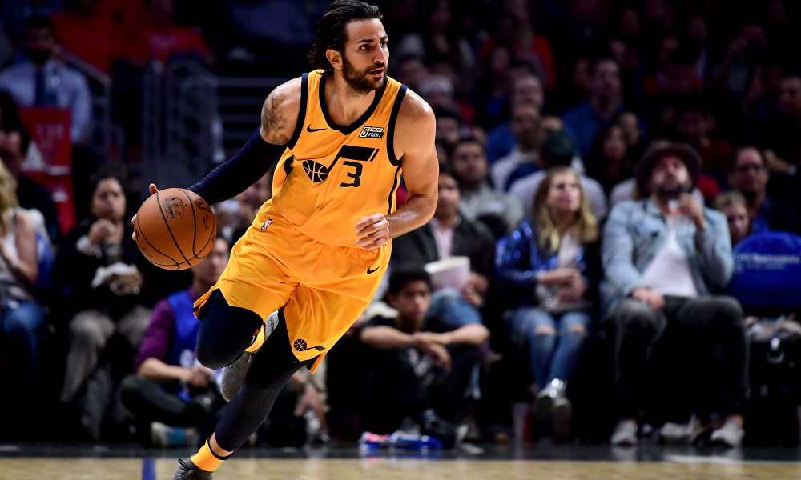
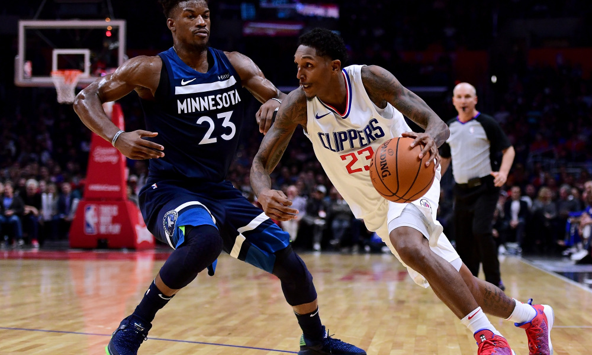
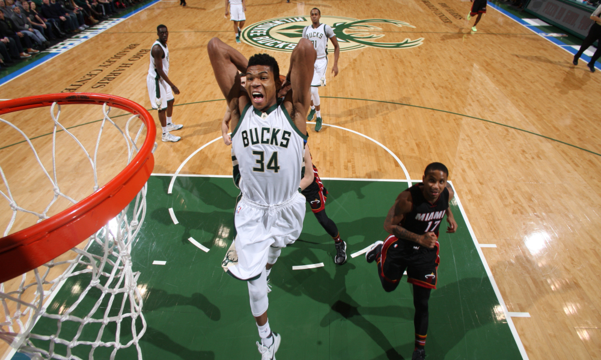

Game 1: Cleveland Cavaliers at Detroit Pistons
My Pick:
Detroit Pistons
Why I'm Rolling with them:
The Detroit Pistons have looked good lately, beating Toronto in the Dwane revenge game, which saw Bullock hit a game winner to steal a close game. Because of that, the Pistons are a game ahead of .500, and a solid 5.5 games ahead of the Cavaliers. Colin Sexton had his career high against the Wizards on Wednesday, scoring 24 points in a losing effort as the Cavs got blown out by 24. There isn't a lot of good going on for this Cleveland team, and the Pistons should have no trouble, beating the Cavs 119-104.
Game 2: Utah Jazz at Indiana Pacers
My Pick:
Indiana Pacers
Why I'm Rolling with them:
Both the Jazz and Pacers are fun teams to watch, with a star shooting guard, and a good big man rotation as well as a solid small forward. The advantage given to the Jazz based on their defensive reputation can be negated by the bench advantage of the Pacers. I think these two teams are fairly even, and although I think Oladipo is a better player than Mitchell I'd have a hard time choosing a winner if this game was in Utah. Luckily, its in Indiana and the Pacers can use the homecourt advantage to win 115-111.
 Ricky Rubio has been running the point for this Jazz squad, and is a quality playerGame 3: Phoenix Suns at Philadelphia 76ers
My Pick:
Philadelphia 76ers
Why I'm Rolling with them:
The Suns have looked better since putting Warren into their starting lineup, however they are still not on the level of the 76ers. Butler is probably one of the best players in the league to guard Booker, even if he let Kemba go for 60 on him in the Sixers recent win over the Hornets. In addition, Ayton is like a baby Embiid, and is likely going to be abused on both ends of the floor by a superior player. This game will be a massacre, Philadelphia 122-102.
Game 4: Boston Celtics at Charlotte Hornets
My Pick:
Boston Celtics
Why I'm Rolling with them:
As mentioned in the Philadelphia blurb, Kemba went on a tear, setting a league-wide season high with 60 points... In a loss. This Charlotte team lives by Kemba, and dies by everyone else. Batum played 19 minutes, scored 0 points. Even one point would have been enough to turn the tides of that game and possibly let Charlotte snag a win against a top tier team. However, instead they play a Boston team that appears to be clicking, and I don't like their chances. Boston, 113-109.
Game 5: Los Angeles Clippers at Atlanta Hawks
My Pick:
Los Angeles Clippers
Why I'm Rolling with them:
This is a case of one of the best teams in the West against one of the worst teams in the East. There is no way this goes well for Atlanta, and I wouldn't be surprised to see the Hawks lose by upwards of 20. This Clippers team doesn't have a star, but their pieces fit together so well that that doesn't matter (at least in the regular season). Both of these teams have a good bench guard, with Lou Williams and Jeremy Lin being two of the better sixth men in the league. That won't matter when LA wins 122-104.
 Lou Williams is leading the bench of this really good Clippers teamGame 6: San Antonio Spurs at New Orleans Pelicans
My Pick:
New Orleans Pelicans
Why I'm Rolling with them:
These two teams are probably pretty even on a normal day. However, the Spurs played last night, and both DeRozan and Aldridge had 40 minutes of play. I like Pop's decision to have White come off the bench and let DeRozan handle more of the playmaking, but having Jrue to guard DeRozan may throw a wrench into that plan. If the Spurs play small, they're going to be eaten alive on the boards tonight as AD and Mirotic are both above average rebounders for their positions. New Orleans, 110-102.
Game 7: Dallas Mavericks at Memphis Grizzlies
My Pick:
Memphis Grizzlies
Why I'm Rolling with them:
The Grizzlies have looked good lately, and are in the midst of a 3 game win streak that has them tied with three other teams for 2nd in the West. Dallas is one of 3 teams in the West under .500, and although they are still only 3 games back from the Grizzlies, that's a sizeable amount this early in the season. I wouldn't be surprised to see Dallas steal this, but the far more likely scenario is Gasol and Conley keep doing what they do best, and win this one 117-110.
Game 8: Denver Nuggets at Milwaukee Bucks
My Pick:
Milwaukee Bucks
Why I'm Rolling with them:
The Milwaukee Bucks have looked mediocre in their last 10, going only 6-4 against good teams. This doesn't bode well for a team that wants to make a run for the finals this year. However, they're still a very good team, and three of the four losses have been by less than 5 points. Giannis matches up nicely against this team, that doesn't have the same type of athletic defenders a team needs to stifle him. Millsap is a far better help defender than on ball defender, and it will show tonight as Giannis leads the Bucks to a 119-114 victory.
 Giannis is still having a great season, and leading Milwaukee to second in the east.Game 9: Oklahoma City Thunder at Sacramento Kings
My Pick:
Oklahoma City Thunder
Why I'm Rolling with them:
Oklahoma, who started the season 1-4 are now 10-5 and show no signs of slowing down. Jerami Grant has looked great in a starting role for the thunder, and seeing as he'll be tasked with guarding Bjelica this could be an important matchup for the Thunder. George has been proving why he was a first option in Indiana, and continues to look great while propelling this Thunder team to the top of the West standings, sitting at a great record with a really good chance to continue their win streak as they take it 115-112.